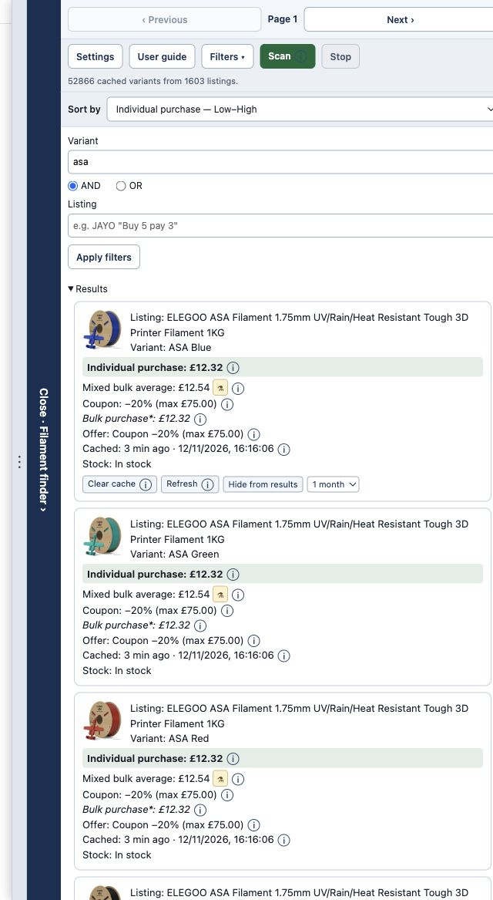
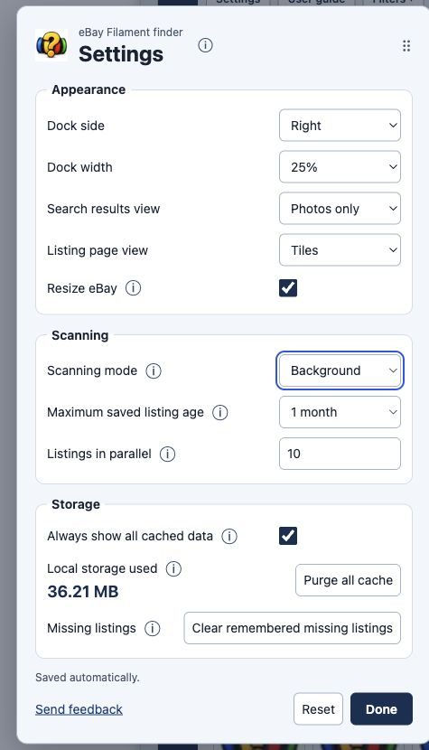
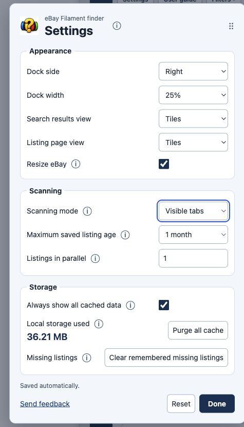
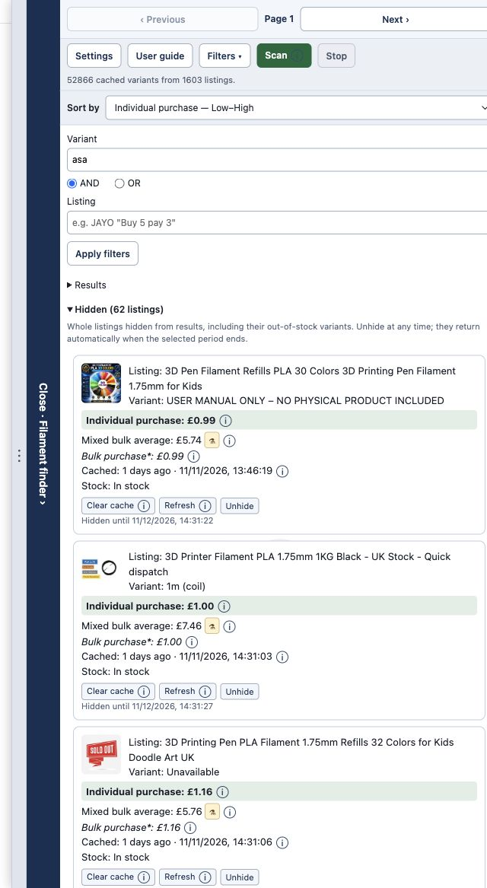
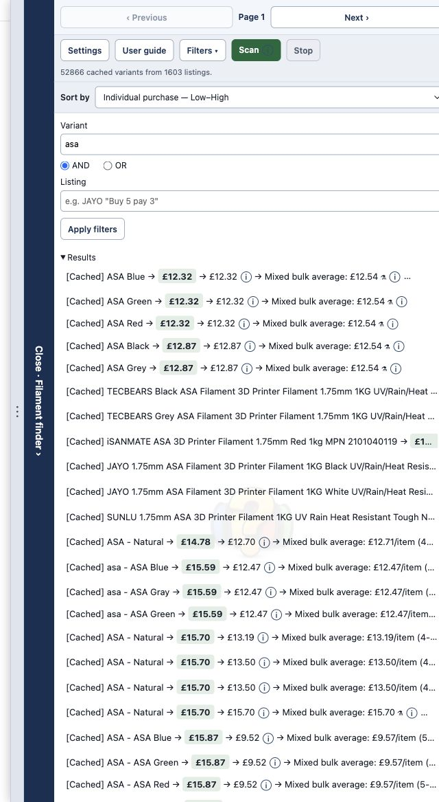
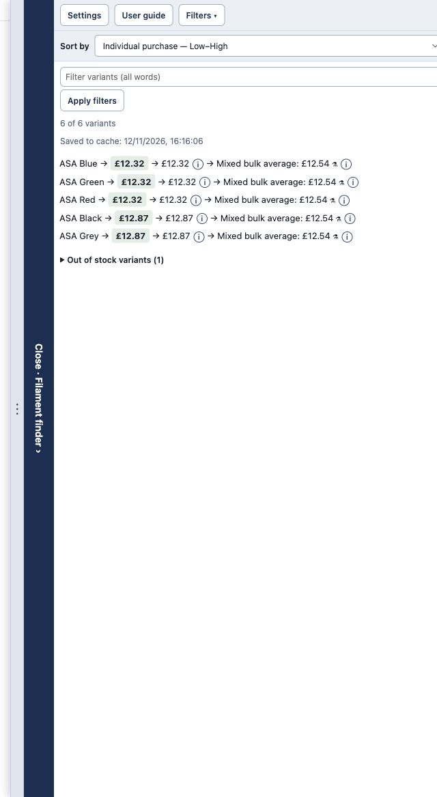
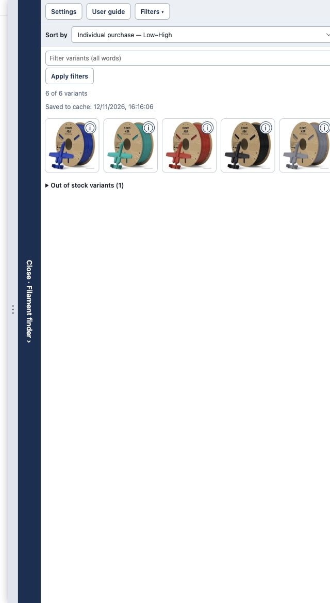
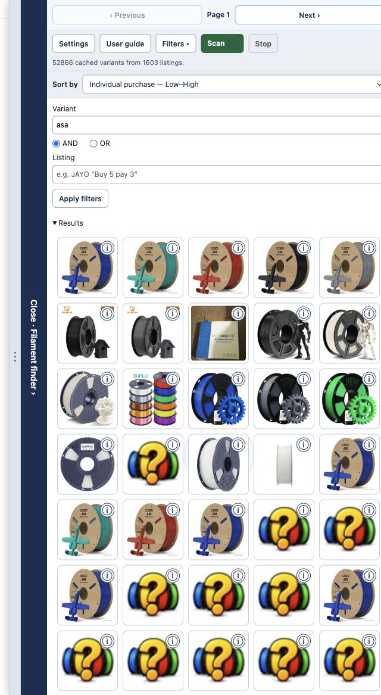

Individual purchase
The estimated cost of one item as sold: item price, less an applicable recognised coupon, plus known postage. Quantity offers are not applied.
VERSION 1.4 · COMPLETE USER GUIDE
Compare options inside eBay listings, reuse your saved discoveries and choose how to scan.
Works on eBay UK and eBay US search results and item pages. The finder reads listing data, filters variants and estimates purchase prices. It does not place orders or apply coupon codes for you.
01 / QUICK START

02 / KEEP BROWSING
Previous / Page N / Next at the top use eBay’s existing pagination links. Buttons are disabled when there is no usable link, including first, last and single-page results. You can also use eBay’s own pagination.
After your first Scan, client-side results updates add newly discovered listing IDs to the queue. If a scan is running, the queue grows. If it finished, processing resumes for the new candidates. Listings already handled are deduplicated: eBay can repeat the same listing on several result pages.
The finder collects eligible organic cards in the main results list; sponsored cards, recommendation carousels and secondary groups are not scan candidates. The separate title check for automatically opening the finder can also recognise sponsored listing titles.
An open finder stays open during pagination. A closed finder checks new listing titles for “filament”. The finder ignores its own interface changes when watching eBay’s results.
Stop pauses work and automatic queue extension processing until you click Scan again. Completed results remain. A full reload or new query can reset the live queue; persistent listing data survives.
Scanning X of Y listings refers to the current scan batch, not everything in your cache. New candidates extend Y. With parallel requests, X is the earliest active position. Retrying or switching to visible recovery retains that listing’s position.
03 / CONTROL THE REQUESTS
Choose Settings → Scanning mode. Changes take effect when you next click Scan.
| Mode | How it works | Parallel setting |
|---|---|---|
| Background | Checks listings without opening tabs. Failures appear in Could not check; background mode does not open a verification tab automatically. | Uses your saved count; default 5. |
| Visible tabs | Opens one foreground scan tab and reuses it for successive listings. eBay loads normally; the listing sidebar is suppressed in this managed tab. | Fixed at 1. Your saved background count is kept. |
| Mixed | Starts in background at your saved count. On the first error, new background requests pause; active requests finish. Failed listings are recovered one at a time in the visible tab. Background scanning resumes after recovery. | Uses your saved count in background, then 1 during visible recovery. |
A persistent notice on the search page and scan tab explains that Escape (Esc) stops scanning. You do not need to find a button while pages change. Stop keeps completed data and pending candidates. Click Scan on the source search page to resume.
The visible tab is reused for the entire queue. Normal completion closes the owned scan tab; Stop leaves it open so you can inspect it. Closing the scan tab, closing its source search tab or navigating the scan tab to an unrelated page pauses/ends its ownership. Only one visible listing scan can run across search tabs.



04 / REUSE YOUR DISCOVERIES
Listing data is saved locally in this Chrome profile and survives closing the browser. Each cached result shows its retrieval age and timestamp. Displaying it again does not make it newer.
By default, a search page loads saved values for listings discovered in the current search. Always show all cached data loads every unexpired saved listing from the current eBay marketplace, so you can search your collection without revisiting every results page. UK and US collections are kept separate. Retention, filters and hidden choices still apply.
During Scan, entries within the retention period are skipped and reused. Missing or expired entries need an active retrieval. Opening a normal listing page reads fresh data and updates its saved variants and retrieval time. When you return to a search tab while no scan is running, it reloads updated saved data.

Maximum saved listing age: 1 day, 1 week (default), 1 month (30 days), or Never dropped. Expired data is no longer reused as a fresh-enough cache entry. Never dropped still allows manual deletion and removal of confirmed missing listings.
Local storage used shows how much space the extension’s local data uses, including preferences and records. Purge all cache removes saved listing data and scan snapshots; preferences, hidden choices and remembered missing IDs are kept. Active scans or opened listings may save fresh data again after a purge. There is no undo for a purge. The extension requests unlimitedStorage so a large collection can grow beyond Chrome’s normal local-storage quota; available disk space still matters.
The explicit eBay “We looked everywhere! / Looks like this page is missing” page removes the listing from cache and remembers its ID. Future scans skip those IDs, including ghost search results. Generic server errors and verification pages do not mark listings missing. Clear remembered missing listings forgets all missing IDs at once; it does not purge valid cached listings. If you manually reopen a remembered listing and it becomes readable again, fresh data replaces its missing record.
The finder compares newly read prices against the previous saved data before saving the replacement. A change on the originally opened variant creates a persistent top-page banner with Close. Changes to other variants are summarised by a changed-variant count in the sidebar.
| Colour | Meaning |
|---|---|
| Green | Prices decreased. |
| Red | Prices increased. |
| Black | The compared prices contain both increases and decreases, or a currency changed. |
These are comparisons with the saved scan, not a continuous price history. Added variants and previously unknown prices are not counted as price changes. A failed save is reported with Retry cache save; the “Saved to cache” timestamp reflects the successful saved data.
05 / FIND THE RIGHT OPTIONS
yellow PLA silk requires all three fragments, in any order."Buy 5 pay 3".Matching ignores case and uses text fragments. Quotes preserve a phrase: "silk PLA" requires that sequence. Empty fields impose no restriction. Typing alone does not apply a filter: click Apply filters or press Enter. Filters never automatically copy the eBay search query.
On an individual listing there is one variant-name filter and no Scan/Stop buttons: listing data is read automatically. Clicking an available variant asks eBay to select its option dropdowns. If it cannot, use the offered reload link or select the options manually. This does not add anything to your basket.
Filtering searches all loaded in-memory rows, not only the tiles currently drawn on screen. The mixed average is recalculated per listing from its matching, in-stock choices.
06 / YOUR WORKSPACE
Settings has separate Search results view and Listing page view selectors. Both default to Tiles. Each page type also remembers its own sort choice and direction.
| View | What you see | How to inspect details |
|---|---|---|
| Tiles | Full listing/variant names, price calculations, stock and cache details. | Use each field’s ⓘ; the active sort field is highlighted green. |
| Single lines | A compact row for each entry, with the active sort field highlighted. | Hover or focus the line for the complete text explanation. |
| Photos only | A responsive grid in your selected order. One image per result/variant; different entries can legitimately share a photo. | Hover, focus or click the corner ⓘ to open the full tile and listing actions. Calculation ⓘ tooltips open inside that panel. Close, Escape or clicking outside dismisses it. |





Failed or invalid photo requests keep a placeholder. A photo remains hidden until its own request loads successfully; grid reshuffling preserves the correct row order and image ownership.
Resize eBay unchecked (default) overlays the open finder above the page. Checked places it beside a narrowed eBay page. The collapsed 44px rail always keeps its own space. Choose Left or Right and a Dock width of 25%, 50%, 75% or 100%. Drag the resize handle for a custom width, or focus it and use arrow keys; Home and End select its extremes. Empty compact results can use a smaller fixed panel.
07 / UNDERSTAND THE CALCULATION
The estimated cost of one item as sold: item price, less an applicable recognised coupon, plus known postage. Quantity offers are not applied.
The estimated cost per listed item at the recognised offer quantity. Applies one supported quantity offer, then an applicable recognised coupon, then known postage, and divides by the required quantity.
The average calculated purchase estimate across the matching, in-stock variants of this one listing. It includes recognised discounts, coupons, saving caps and known postage.
The captured ELEGOO listing has an ASA Blue item price of £15.40, free recognised postage and 20% off capped at £75 per order. The estimate for one item is £15.40 − min(£3.08, £75) + £0 = £12.32. Other matching colours have different prices, so their listing’s mixed average can differ.

| Offer | Calculation before a coupon |
|---|---|
| Buy Q Pay P | Item price × P; divide the final order total by Q. |
| Buy Q Get F Free | Item price × Q; divide the final order total by Q + F. |
| Buy Q Save D% | Item price × Q × (1 − D/100); divide the final total by Q. |
| eBay multi-buy | Use the recognised unit price at the chosen tier × its required quantity; divide the final total by that quantity. Identical items of that variant are required. |
The finder compares supported title/banner offers with qualifying multi-buy tiers and uses a supported estimate; two quantity offers are not stacked. Unrecognised or ambiguous promotions are excluded. For title/banner estimates, equally priced eligible items are assumed. A mixed-price basket can produce a different result.
A recognised percentage or fixed-currency coupon reduces the item subtotal after the quantity discount and before postage. A maximum saving is applied once per order. A fixed voucher is also deducted once per order, not once per item, and never below a zero item subtotal.
For example, a £699 item with 20% off but a £75 maximum saving is £699 − min(£139.80, £75) = £624, before any postage. A £5 voucher on an order subtotal of £40 makes £35 before postage; it is not £5 off each item.
Supported structured eBay promotion banners can carry a required code, saving cap, quantity and terms link. Listing subtitle codes are labelled advertised/conditional. Duplicate title/banner promotions are not applied twice. A code-required quantity banner is not combined with a second coupon code. Unreadable caps or incompatible cap currencies are not silently treated as unlimited discounts.
Minimum spend, expiry, account eligibility, variant eligibility and combining offers may still require checking on eBay. The finder does not apply or test a code at checkout.
Each matching, in-stock, priced variant counts once; stock quantities are ignored. Rows with unknown prices are excluded. A shared currency is required.
With a consistent recognised quantity offer, the average uses per-item offer estimates with coupon caps and known postage. Its tooltip also shows cheapest and most expensive required-quantity selections, each assuming all items have that one variant’s price. If identical items are required, mixing variants is not assumed.
Without a shared offer, the finder averages each variant’s own calculated bulk-purchase estimate, including coupons even when there is no quantity discount. Different variants can use different requirements. This is not a quote for buying one of every variant in a single combined basket.
| Label | Meaning |
|---|---|
| Listing / Variant | Title and option combination. A single-item listing can show only Listing. |
| Coupon / Advertised coupon | Recognised saving, optional maximum and code. Advertised subtitle coupons are conditional. |
| Offer | Required quantity, identical-item restriction, recognised coupon and any required code or cap. |
| Stock | Availability when the listing data was retrieved. Cached stock is not a live check. |
| Cached: age · timestamp | Data reused from local storage; age is based on its retrieval time. |
| Saved to cache | The listing page’s latest successful save timestamp. |
| ≈ | An approximate price/conversion supplied by eBay. No live currency conversion is performed by the finder. |
| ⚠ | Postage was unknown and omitted where unavailable. The estimate is not a confirmed delivered total. |
| * / ⚗ / Experimental | Offer assumptions apply. Read the calculation tooltip and verify the checkout result. |
| Unknown / missing amount | Required data could not be read; unknown prices are not treated as zero. |
08 / EVERY ORDER
The Sort by dropdown is always visible on its own line below the buttons. Text choices use A–Z / Z–A; price choices use Low–High / High–Low. A green highlight marks the field used in Tiles and Single lines. Photos use the same order without text overlays.
Search results offer ten choices; listings offer six. Mixed bulk average can be displayed on listing pages, but is not a listing-page sort choice because it is one value for the matching set. Unknown numeric prices follow known values in either direction. Different currencies are grouped rather than converted. Sorting does not start another scan.
Orders listing titles. The screenshots show the actual rendered entries and active highlight.


Orders option labels; single-item listings use their title. The screenshots show the actual rendered entries and active highlight.


Orders the calculated one-item cost. The screenshots show the actual rendered entries and active highlight.


Orders the per-item offer estimate. The screenshots show the actual rendered entries and active highlight.


Orders by each listing’s matching average. The screenshots show the actual rendered entries and active highlight.


Orders variant names. The screenshots show the actual rendered entries and active highlight.


Orders the calculated one-item cost. The screenshots show the actual rendered entries and active highlight.


Orders the per-item offer estimate. The screenshots show the actual rendered entries and active highlight.


09 / CONTROL REFERENCE
| Control | Action |
|---|---|
| Open / Close rail | Expand or collapse the finder; the rail stays protected. Escape inside the finder can collapse it when no scan or nested popup needs that key. |
| Previous / Next | Use eBay’s pagination links. Page N is the current page, not a scan count. |
| Settings | Appearance, scanning and storage. Drag its header to move the dialog. Settings ⓘ popups explain individual options. |
| User guide | Open this guide in a new tab. Also available by right-clicking the Chrome extension icon. |
| What’s new | Open release notes from the extension icon’s right-click menu. |
| Filters | Show/hide the input controls while retaining applied filters. |
| Apply filters / Enter | Apply input values and recalculate matching results and averages. |
| Sort by | Immediately choose a field and direction; remembered separately for search and listing pages. |
| Scan | Start user-initiated work or resume the queue. Reuse eligible cache entries; keep completed work. |
| Stop / Esc during a scan | Pause scanning and automatic processing. Keep completed data and pending work. |
| Retry / Skip in scan tab | Retry the same blocked/unreadable listing after resolving the page, or skip it. |
| Results / Hidden / Out of stock variants | Expand or collapse the corresponding group. Hidden and Out of stock start collapsed. |
| Could not check | Inspect failed or skipped candidates and their reported reason. |
| ⓘ / experimental marker | Read price, cache or control explanations without opening the listing. |
| Photo corner ⓘ / Close | Open full tile details from Photos only; Close dismisses the panel. |
| Clear cache / Refresh | Delete one whole listing’s saved data, or actively reread that listing. |
| Hide duration / Hide from results / Unhide | Select a period and hide every variant, or restore the listing immediately. |
| Price banner Close | Dismiss the persistent opened-variant price-change notice. |
| Retry cache save | Retry a failed save on the listing page. |
| Purge all cache | Delete saved listing data and scan snapshots. Keep preferences, hidden choices and missing IDs. |
| Clear remembered missing listings | Forget every remembered missing ID so scans may attempt those listings again. |
| Reset / No / Yes | Ask before restoring settings defaults. No cancels; Yes resets preferences, including both page types’ view and sort choices. It does not purge saved listings. |
| Done | Close Settings after pending saves. Changes save automatically. |
| Send feedback | Open an email draft addressed to the extension’s feedback address with the version in the subject. |
10 / SETTINGS REFERENCE
Open Settings from either page. The screenshot shows an existing user’s choices, not factory defaults. The table below gives the defaults. Hover, focus or click each ⓘ for formatted help.
| Setting | Choices / default | Effect |
|---|---|---|
| Dock side | Left / Right; default Right. | Choose the side of the window. |
| Dock width | 25%, 50%, 75%, 100%; default 25%. | Open width; dragging can save a custom value. |
| Search results view | Tiles (default), Single lines, Photos only. | Saved independently of listing pages. |
| Listing page view | Tiles (default), Single lines, Photos only. | Saved independently of search results. |
| Resize eBay | Off (default) / On. | Overlay or place beside the page; collapsed rail always protected. |
| Scanning mode | Background (default), Visible tabs, Mixed. | How new/expired listings are retrieved. Applied on next Scan. |
| Maximum saved listing age | 1 day, 1 week (default), 1 month = 30 days, Never dropped. | Retrieval age for cache reuse, not time since last display. |
| Listings in parallel | 1–999; default 5. | Background count. More than 20 produces a warning. Visible tabs shows 1 without overwriting your saved count. Mixed falls back to 1 only for visible recovery. |
| Always show all cached data | Off (default) / On. | Load all unexpired data for this eBay marketplace without an active scan. |
| Local storage used | Read-only live size. | Includes local extension data. Purge all cache is alongside it. |
| Missing listings | Clear remembered missing listings button. | Forgets all confirmed-missing IDs; valid cached listings stay. |
| Sort by (sidebar) | Individual purchase — Low–High by default. | Choice and direction remembered independently for each page type. |
| AND / OR (search filters) | AND by default. | Combine the two non-empty filter fields. |
11 / LARGE COLLECTIONS
Version 1.4 separates reading saved data, filtering/sorting and drawing results:
If five tiles fit on screen, roughly ten are drawn around your position; the exact count depends on their size and grid columns. A filter still searches every loaded variant. Scrolling itself does not fetch listings from eBay.
This reduces page elements and repeated work; it does not make the dataset free to store or process. Initial loading time and memory use still depend on cache size, device and settings. There is no fixed speed-up claim or timed benchmark.
12 / TROUBLESHOOTING
Open Results if it is collapsed. Clear Variant and Listing, then Apply filters. Expand Out of stock to check availability. Enable Always show all cached data to use a wider collection, or click Scan for new listings.
You must click Scan first during the live page visit. After Stop, click Scan to resume. Repeated, cached or remembered-missing listings may add no active work. A full reload/new query can reset the live queue.
Cached means saved, not freshly retrieved. Check its timestamp. Open the listing or use Refresh for current data. Merely displaying or scanning within retention does not renew that entry.
Use Visible tabs or Mixed and resolve the page directly. Retry retries that listing; Skip moves on; Stop pauses. Reduce background parallel requests if needed. No scan mode guarantees freedom from eBay limits.
Different variants/listings may share eBay images. Open ⓘ to verify the title, variant and link. Failed photos should show a placeholder rather than another row’s picture.
Fresh prices can alter its sort position. The saved listing is updated and an idle search tab reloads changes when activated. Check the price-change notice and saved timestamp.
Verify variant, pack/weight, quantity, coupon eligibility, saving cap, minimum spend, offer combination and delivery destination. Conditional estimates do not guarantee the checkout price.
It is recalculated from matching in-stock variants for each listing, not every item in the entire collection. Discounts, coupon caps, different requirements and known postage can affect it.
Expand Hidden and choose Unhide, or wait for the selected duration to expire. Hiding affects every variant, including unavailable ones.
Open it normally to allow a fresh successful read to restore it. Alternatively clear all remembered missing IDs in Settings; you need not purge valid data.
Wait for eBay to finish loading, use the offered reload link, or select its options manually. Some layouts do not support automatic selection.
Read the reported reason, try Retry cache save, and inspect Local storage used. Purge all cache only if you want to delete saved results. A retry does not guarantee success if storage or the extension connection remains unavailable.
Reload the extension on Chrome’s Extensions page, then refresh the eBay tab. Old content scripts can remain until the page is refreshed. If you see a reconnect message, refresh that page.